Artificial Intelligence (AI) and Graphs
Graphs to aid AI
What is a graph?
- A graph is a set of vertices/nodes connected by edges/arcs
- In AI, graphs are used to model relationships, networks, and decision-making problems
- They can represent things like:
- Routes between cities (pathfinding)
- Connections in a neural network
- State transitions in decision trees or planning
Types of graphs
| Type | Use in AI |
|---|---|
| Directed Graph | Models one-way relationships, such as state transitions in search algorithms (e.g. A*) |
| Undirected Graph | Useful for bidirectional relationships, such as undirected social connections in a graph |
| Weighted Graph | Represents costs or heuristics, commonly used in shortest path algorithms like Dijkstra’s or A* |
Representation of graphs
- Graphs can be represented using:
- Adjacency Matrix – ideal for dense graphs and fast lookup
- Adjacency List – uses less space and is efficient for sparse graphs (often used in AI search)
- Both can be used in AI to represent problem spaces such as:
- Game boards
- Map-based navigation
- Resource allocation networks
Undirected, unweighted graph
- An undirected, unweighted graph is a type of graph where:
- Edges have no direction, connections go both ways
- All edges are equal, there are no weights or costs
- It is represented with a symmetric adjacency matrix, where a
1indicates a connection and a0means no connection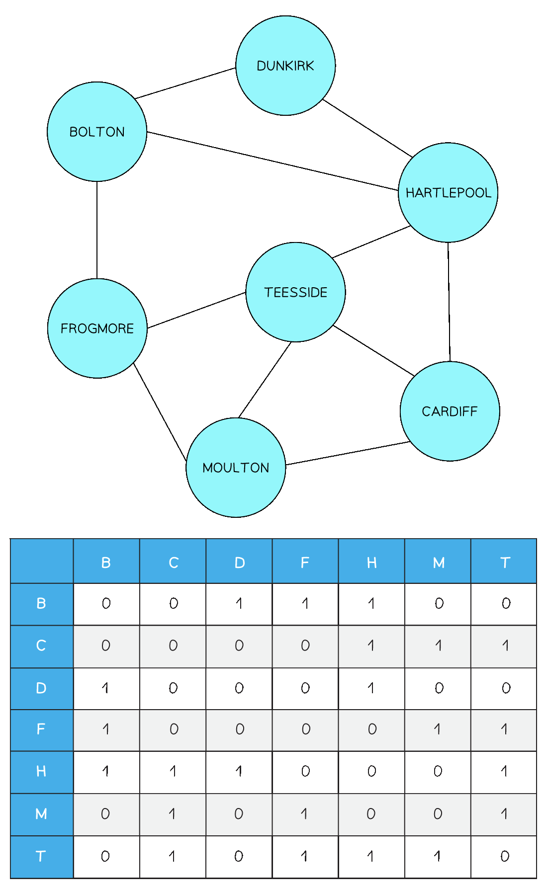
- In this example:
- Each node is a town (e.g. Bolton, Dunkirk, Teesside)
- A
1in the matrix shows a connection exists between two towns - A
0means no direct connection
- A
- Each node is a town (e.g. Bolton, Dunkirk, Teesside)
- Example:
- Bolton and Frogmore have a
1at their intersection → they are connected - Dunkirk and Moulton have a
0→ no direct connection
- Bolton and Frogmore have a
- The matrix is symmetric, confirming that the graph is undirected
AI relevance
- Undirected, unweighted graphs are useful in AI for:
- Exploring environments, e.g. mapping rooms in a building with equal-cost connections
- Clustering in machine learning, where the presence of a connection implies similarity
- Social network analysis, where mutual connections (friendships, links) are undirected
- These graphs are often used in:
- Depth-first or breadth-first search
- Graph traversal algorithms to explore all reachable nodes
Directed, unweighted graph
- A directed graph (or digraph) is one where edges have a direction
- This means connections go from one node to another
- Connections cannot be traversed in reverse unless another directed edge exists
- In this example:
- Each node represents a town
- Arrows show the direction of travel
- A
1in the matrix at (row X, column Y) means there is a directed edge from X to Y - A
0means there is no direct connection
- For instance:
B → Dis allowed (matrix value = 1)D → Cis not allowed (matrix value = 0)
- Because this matrix is not symmetric, it reflects the one-way nature of connections
AI relevance
- Directed, unweighted graphs are essential in AI for:
| Use case | How the graph is used |
|---|---|
| Search algorithms | Used in A*, BFS, DFS where state transitions are directional |
| Expert systems / rule engines | Representing dependencies between logical conditions or actions |
| Planning and scheduling | Modelling prerequisites and directed workflows |
| Navigation | Handling one-way streets or directed transport systems |
Undirected, weighted graph
- An undirected, weighted graph is a graph where:
- Edges go both ways (no direction)
- Each edge has a weight, which can represent:
- Cost
- Distance
- Time
- Risk
- If no connection exists between two nodes, the matrix contains ∞ (infinity)
- Nodes represent towns
- Edges represent roads, and weights represent distances or costs
- In the matrix:
matrix[B][D] = 15→ Bolton to Dunkirk is 15 unitsmatrix[B][C] = ∞→ Bolton and Cardiff are not directly connected
- The matrix is symmetric, confirming this is an undirected graph
AI relevance
- Undirected, weighted graphs are widely used in AI when:
| Use case | How it helps AI |
|---|---|
| Pathfinding (e.g. A, Dijkstra)* | Finding the lowest cost path between nodes |
| Clustering & similarity graphs | Edges represent strength of relationships or similarity weights |
| Recommendation engines | Connecting users or items based on weighted similarity |
| Robotics & navigation | Planning efficient movement paths through environments |
- In AI, the weights are crucial for deciding the best route or option when multiple paths are available
Directed, weighted graph
- A directed, weighted graph is a graph where:
- Edges have a direction (e.g.
A → Bbut notB → A) - Each edge has a weight, such as:
- Distance
- Cost
- Time
- Probability
- Edges have a direction (e.g.
- If there is no edge, the value is ∞ (infinity)
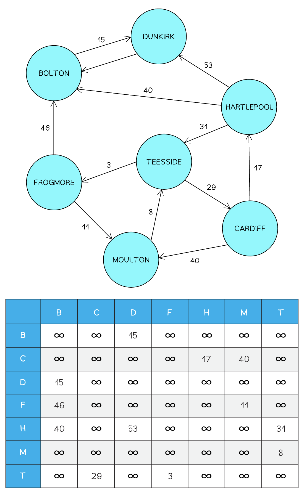
- Nodes = Towns
- Edges = One-way roads
- Weights = Travel cost or distance
- The adjacency matrix:
B → D = 15→ there is a road from Bolton to Dunkirk costing 15 unitsC → H = 17→ Cardiff to Hartlepool has a weight of 17H → T = 31butT → H = ∞→ you can get from Hartlepool to Teesside, but not the other way
- This matrix is not symmetric, confirming the graph is directed
AI relevance
- Directed, weighted graphs are critical in AI for:
| Use case | Purpose in AI |
|---|---|
| A* and Dijkstra algorithms | Choosing the shortest path where direction and cost matter |
| Route planning in robotics | Modelling direction-sensitive travel (e.g. traffic rules) |
| Search algorithms | Tracking cost between transitions between states |
| Reinforcement learning | Modelling rewards/costs for state transitions in decision environments |
| Game AI | Movement systems with terrain costs or restrictions |
Purpose and structure of a graph ★
- A graph is used in AI to record relationships between entities by using vertices/nodes and edges; for example, places on a map and the distances between them, in order to find the shortest route
- Vertices/nodes identify or represent entities such as destinations or people; edges connect nodes and represent possible paths between them
- A path is the list of nodes connected by edges between two given nodes; a cycle is a list of nodes that returns to the same node
- Nodes/edges may be labelled or weighted, and the weighting is applied and used in the context of the application
- The structure is chosen to fit the problem: directed edges for one-way transitions, undirected edges for mutual relationships, weights for cost/distance/time
Graphs as state spaces ★
- In AI a graph acts as a state space: each node is one possible state of the problem, each edge is an action that moves from one state to another, and a path is a sequence of actions
- A search problem is defined by its initial state, its goal state, the actions available and the cost of a path
- Searching the graph means expanding states from the initial state until a goal state is reached, which is how AI plans routes, solves puzzles and plays games
- In exam questions this idea is usually phrased as “the purpose of a graph in an AI system” — relate it to recording relationships between entities and finding the shortest/cheapest route
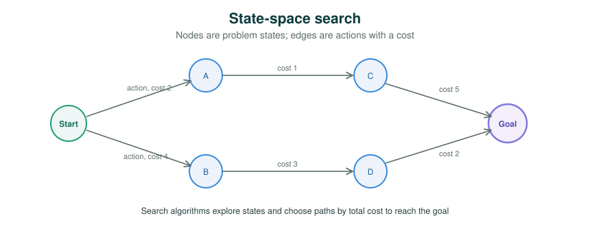
The 2027–2029 syllabus states: “Candidates will not be required to write algorithms to set up, access, or perform searches on graphs.” You only need to carry out these algorithms by hand and explain the result. The pseudocode and Python below are included for enrichment only and will not be examined.
Describe the purpose of a graph when used in an Artificial Intelligence (AI) system.
… [2]
Answer
Q10(a) One mark for each mark point (Max 2)
- MP1: A graph is used in AI to record relationships between entities
- MP2: … using vertices / nodes and edges
- MP3: for example, to represent places on a map and the distances between them, in order to find the shortest route
Describe the structure of a graph as used in an Artificial Intelligence (AI) system.
Answer
Q6(a) One mark per point (Max 2)
- MP1: A graph uses vertices/nodes to identify/represent entities such as destinations, people, etc
- MP2: Edges are used to connect nodes and can represent possible paths between them // a path is the list of nodes connected by edges between two given nodes
- MP3: Nodes/edges can be labelled/weighted, and this is a weighting that can be applied and used in the context of the application
- MP4: A cycle is a list of nodes that return to the same node
Dijkstra's shortest path algorithm
- In Computer Science, an optimisation problem involves finding the most efficient solution to a given problem
- This could mean minimising cost, time, or resource usage, or maximising output, efficiency, or value
- Examples of optimisation problems include:
- Finding the shortest route between two locations (e.g. Google Maps)
- Minimising resource usage in manufacturing or video games
- Creating efficient timetables (e.g. for schools or offices)
- Scheduling tasks and staff shifts to avoid conflicts or downtime
- One of the most common real-world examples is finding the shortest path from A to B, which is exactly what Dijkstra’s algorithm solves
What is Dijkstra's shortest path algorithm?
- In A Level Computer Science, Dijkstra’s shortest path algorithm is a classic optimisation algorithm
- It calculates the shortest path from a starting node to all other nodes in a weighted graph
- It is often compared to breadth-first search, but Dijkstra’s includes edge weights and ensures the lowest total cost to reach each destination node
How it works:
- The graph is made up of nodes (vertices) and edges (arcs)
- Each edge has a weight, which can represent:
- Time
- Distance
- Cost
- The algorithm repeatedly visits the unvisited node with the smallest known distance and updates the distances of its neighbours
- It guarantees the optimal path from the start node to every other node in the graph
- For revision on graphs, see #Graphs to aid AI
- An illustrated example of Dijkstra’s algorithm is shown below:
Performing Dijkstra's shortest path algorithm
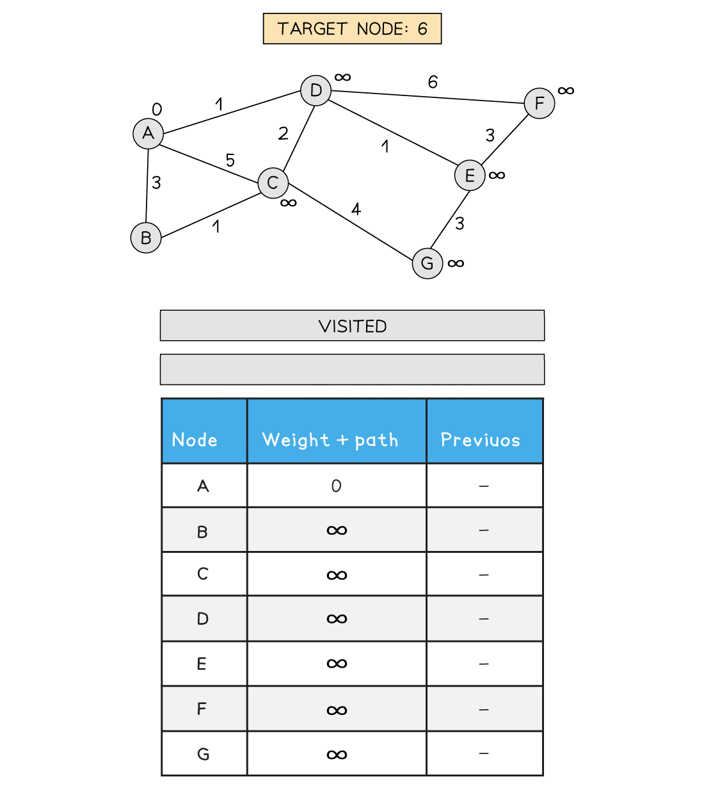
- Set A path to 0 and all other path weights to infinity
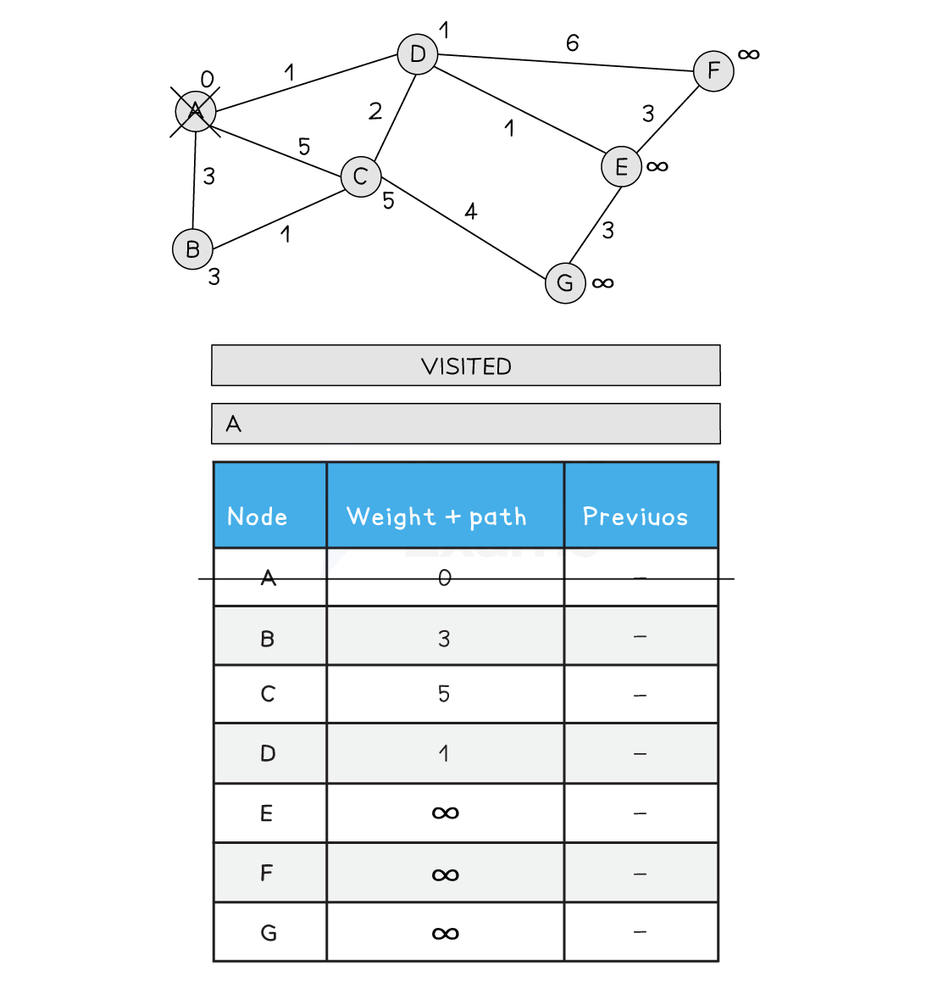
- Visit A. Update all neighbouring nodes path weights to the distance from A + A’s path weight (0)
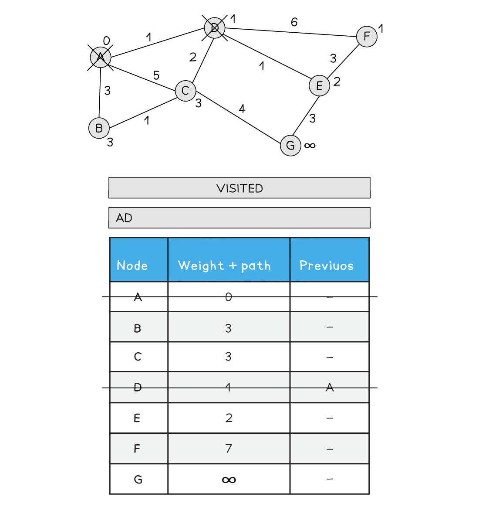
- Choose the next node to visit that has the lowest path weight (D)
- Visit D
- Update all neighbouring, non-visited nodes with a new path weight if the old path weight is bigger than the new path weight
- C is updated from 5 to 3 as the new path is shorter (A > D > C)
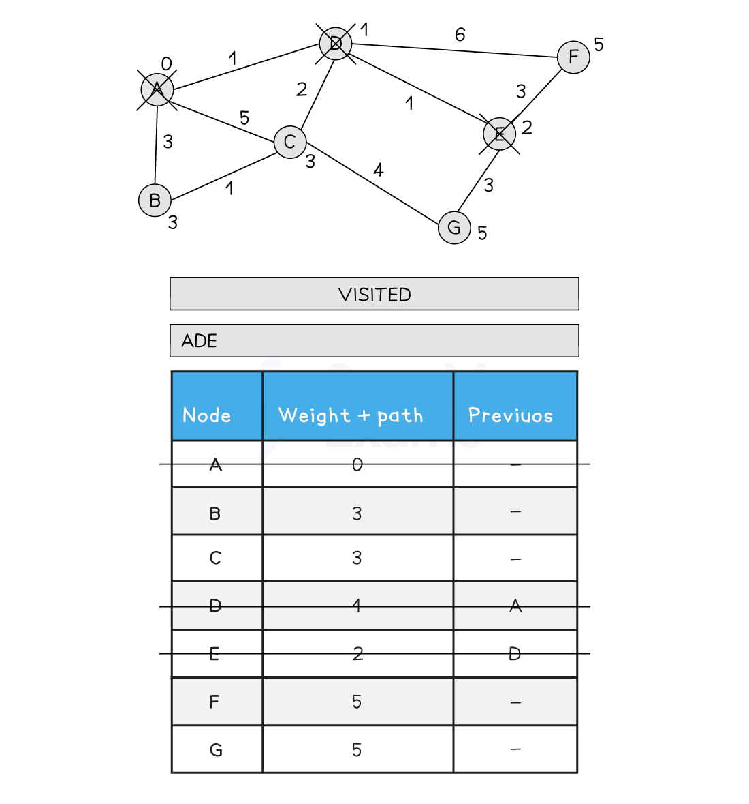
- Choose the next node to visit that has the lowest path weight (E)
- Visit E
- Update all neighbouring, non-visited nodes from E with a new path weight
- F is updated from 7 to 5 as the new path is shorter (A > D > E > F)
- Choose the next node to visit that has the lowest path weight (B)
- Visit B
- Update all neighbouring non-visited nodes from B with a new weight if the path is less than the current path
- C is not updated as A > B > C is 4
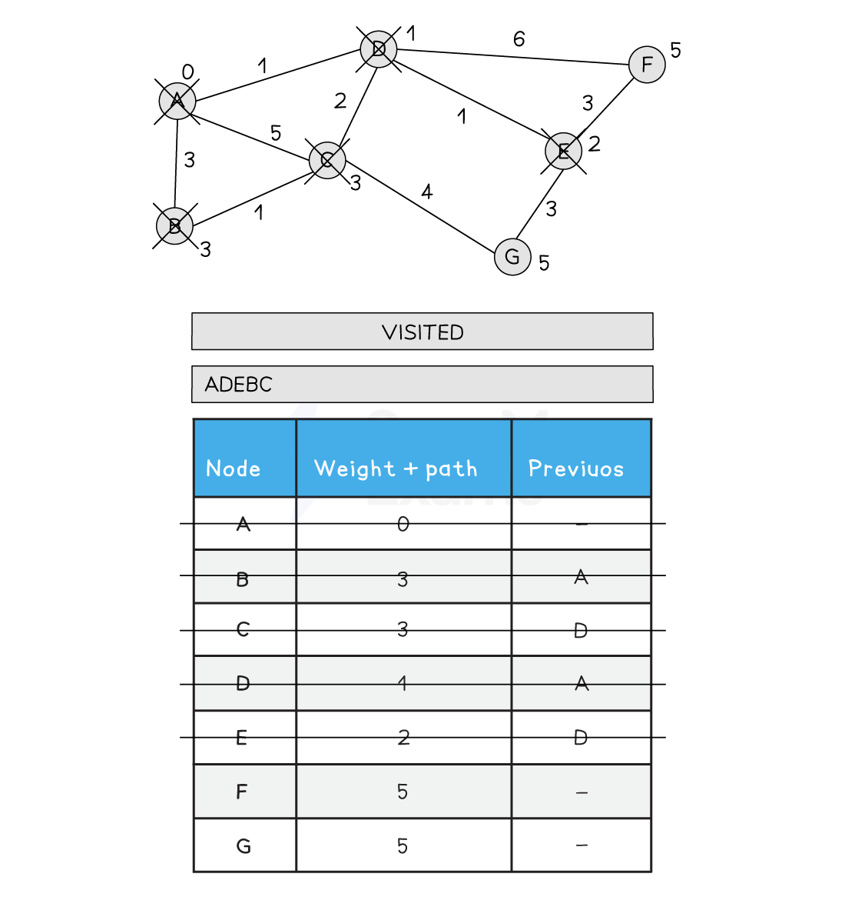
- Choose the next lowest node and visit ©
- Update C’s neighbours if the new path is shorter than the old path
- A > D > C > G is 8, so G is not updated
- Choose the next lowest node and visit (F)
- Update F’s neighbours if the new path is shorter than the old path
- F has no non-visited neighbours so no updates are made
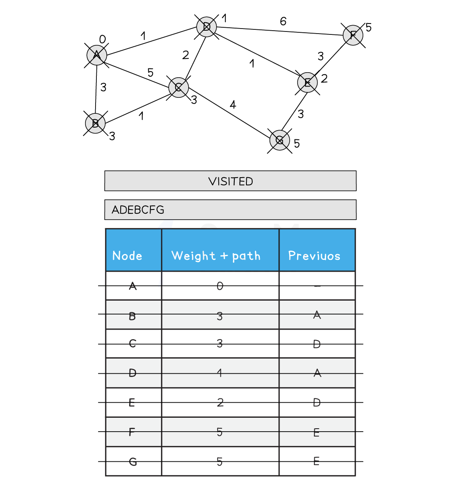
- Choose the next lowest node and visit (G)
- G has no non-visited neighbours so no updates are made
- All nodes have been visited
- Back tracking from G gives the following order and total distance A-D-E-G (5)
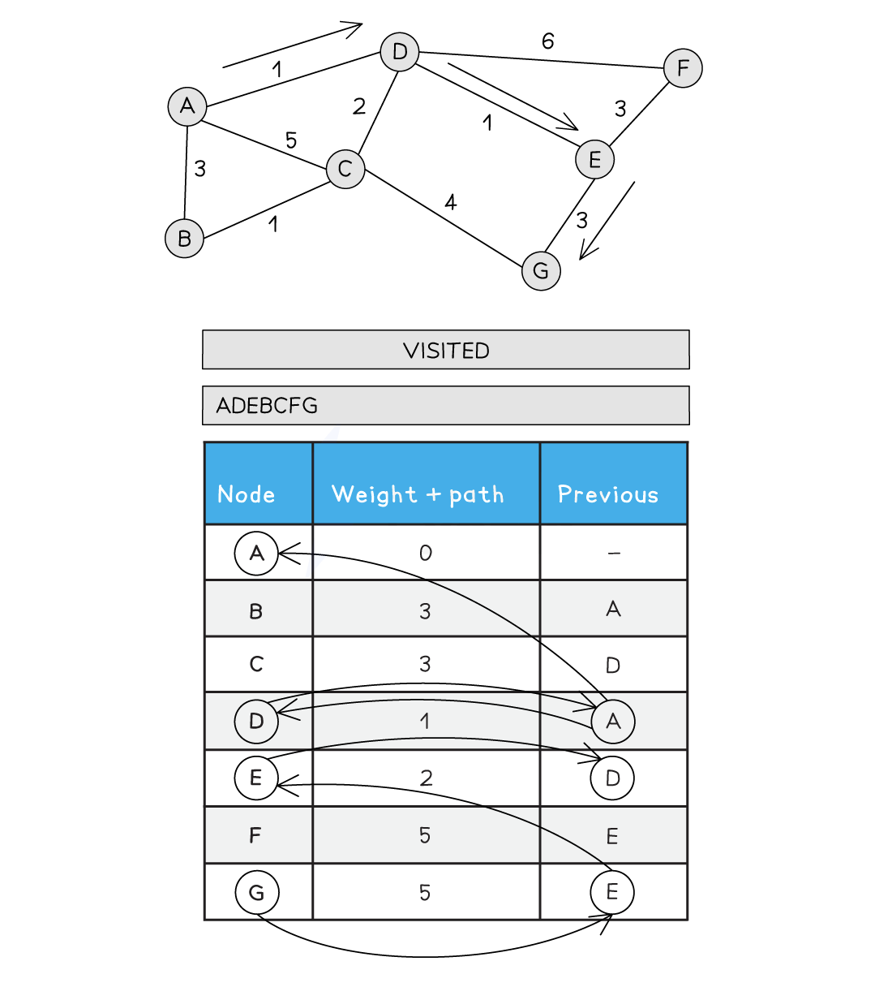
Figure 1: Performing Dijkstra’s Shortest path Algorithm
Programming Dijkstra's shortest path algorithm (enrichment only — not examinable)
The 2027–2029 syllabus explicitly excludes writing algorithms to set up, access, or search graphs. Study the manual execution of Dijkstra’s algorithm (above and in the questions below), not this implementation.
Pseudocode
FUNCTION Dijkstra(graph, start, goal)
// Initialise distances
FOR EACH node FROM graph
SET distance[node] TO infinity
NEXT node
SET distance[start] TO 0
DECLARE previousNode AS DICTIONARY
DECLARE visited AS LIST
DECLARE unvisited AS LIST
FOR EACH node FROM graph
ADD node TO unvisited
NEXT node
WHILE LENGTH(unvisited) > 0
// Find unvisited node with shortest distance
SET min TO null
FOR EACH node FROM unvisited
IF min = null THEN
SET min TO node
ELSEIF distance[node] < distance[min] THEN
SET min TO node
ENDIF
NEXT node
// Exit if goal reached
IF min = goal THEN
EXIT WHILE
ENDIF
// Update distances to neighbours
FOR EACH neighbour FROM graph[min]
SET cost TO weight(min, neighbour) // assume this function returns the edge weight
SET alt TO distance[min] + cost
IF alt < distance[neighbour] THEN
SET distance[neighbour] TO alt
SET previousNode[neighbour] TO min
ENDIF
NEXT neighbour
REMOVE min FROM unvisited
ADD min TO visited
ENDWHILE
// Build path from goal to start
DECLARE path AS LIST
SET node TO goal
WHILE node != start
ADD node TO path
SET node TO previousNode[node]
ENDWHILE
ADD start TO path
REVERSE path
RETURN path
ENDFUNCTION
Assumptions:
graph[node]returns a list of neighbour nodesweight(x, y)returns the edge weight between nodexandy- Lists like
visited,unvisited, andpathsupportADDandREMOVE
Python
def dijkstra(graph, start, goal):
# Initialise distances and previous node map
distance = {node: float('inf') for node in graph}
distance[start] = 0
previous_node = {}
visited = set()
unvisited = set(graph.keys())
while unvisited:
# Find the unvisited node with the smallest distance
min_node = None
for node in unvisited:
if min_node is None or distance[node] < distance[min_node]:
min_node = node
if min_node == goal:
break
for neighbour, weight in graph[min_node]:
if neighbour in visited:
continue
alt = distance[min_node] + weight
if alt < distance[neighbour]:
distance[neighbour] = alt
previous_node[neighbour] = min_node
visited.add(min_node)
unvisited.remove(min_node)
# Reconstruct path from goal to start
path = []
current = goal
while current != start:
path.append(current)
current = previous_node[current]
path.append(start)
path.reverse()
return path
Example usage:
# Graph format: adjacency list with weighted edges
graph = {
'A': [('B', 2), ('C', 5)],
'B': [('D', 1)],
'C': [('D', 2)],
'D': [('E', 3)],
'E': []
}
print(dijkstra(graph, 'A', 'E'))
Output:
- A list of nodes representing the shortest path from
'A'to'E'
Calculate the best path between the Begin node and each of the nodes in the diagram using Dijkstra’s algorithm.
Show your working and write your answers in the table provided.
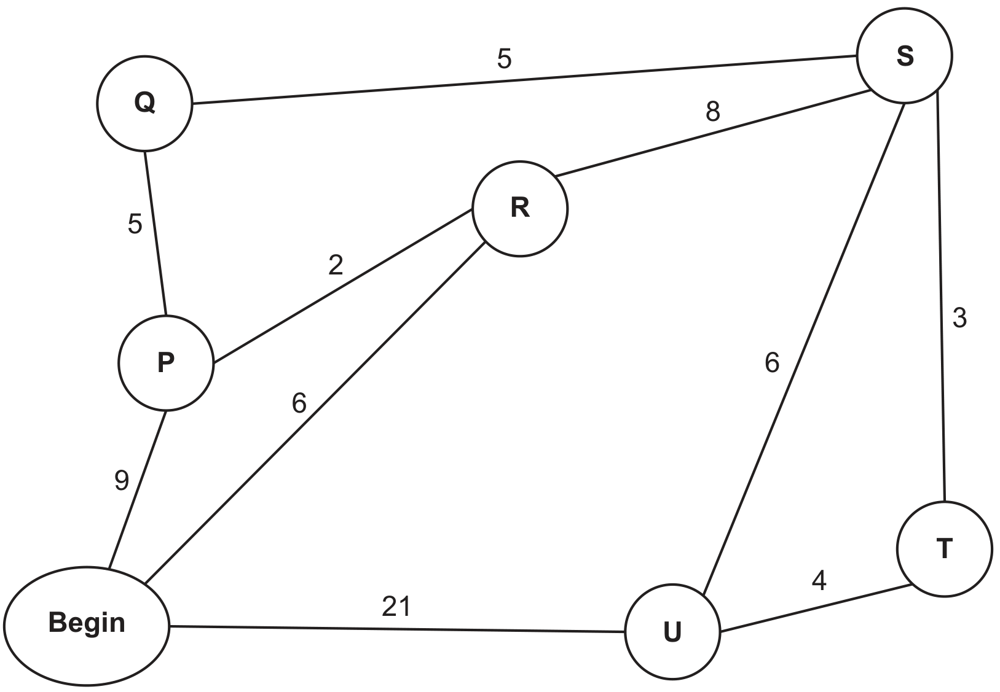
| P | Q | R | S | T | U |
|---|---|---|---|---|---|
[5]
Answer
Q9(b) One mark per mark point – working (Max 3). May be seen on diagram or in working section.
- MP1 Initialisation – setting Begin to 0;
- MP2 … and the rest of the nodes to the maximum distance;
- MP3 Evidence to show values at nodes being updated;
- MP4 Evidence to show ‘visited node(s)’;
- MP5 Evidence to show a correct calculation of at least one route;
- MP6 Evidence to show more than one route has been calculated for at least one node.
Correct Answers (Max 2): Two marks for all six correct values; one mark for four or five correct values.
- P = 8; Q = 13; R = 6; S = 14; T = 17; U = 20.
Calculate the best path between the Home node and each of the nodes in the diagram using Dijkstra’s algorithm.
Show your working and write your answers in the table provided.
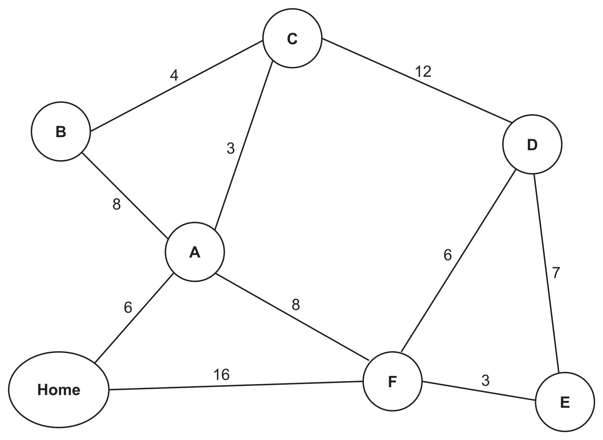
| A | B | C | D | E | F |
|---|---|---|---|---|---|
[5]
Answer
Q9(b)(ii) One mark per mark point – working (Max 3). May be seen on diagram or in working section.
- MP1 Initialisation – setting Home to 0;
- MP2 … and the rest of the nodes to ∞;
- MP3 Evidence to show values at nodes being updated;
- MP4 Evidence to show ‘visited node(s)’;
- MP5 Evidence to show a correct calculation of at least one route;
- MP6 Evidence to show more than one route has been calculated for at least one node.
Correct Answers (Max 2) – allow these marks if totals clearly identified in working. Two marks for all six correct values; one mark for four or five correct values:
- A = 6, B = 13, C = 9, D = 20, E = 17, F = 14.
A* algorithm
What is the A* algorithm?
- The A* (A-star) algorithm is a pathfinding algorithm that builds upon Dijkstra’s algorithm
- It introduces a heuristic function to improve efficiency
- It is used to find the shortest path from a starting node to a goal node in a graph
- While Dijkstra’s algorithm considers only the actual cost from the start node:
- A* enhances this by estimating the remaining distance to the goal
- This makes it more goal-oriented and often more efficient
How A* improves on Dijkstra's
- To avoid inefficient detours, A* introduces a heuristic function, called h(x)
- It estimates the straight-line distance (Euclidean distance) from the current node to the goal
- A* combines both cost and estimate using the formula:
- f(x) = g(x) + h(x)
- g(x) = the actual cost from the start node to the current node
- h(x) = the heuristic estimate to the goal node
- f(x) = the total estimated cost of the cheapest solution through node x
- By choosing nodes with the lowest f(x) value, A* aims to explore paths that are both cheap and move closer to the goal
Heuristics in A*
- The heuristic function h(x) should never overestimate the true cost to the goal
- This ensures A* remains optimal
- The closer h(x) is to the true cost, the fewer nodes A* needs to explore
- If the heuristic values of successive nodes increase, the search may be moving away from the goal, helping it backtrack or choose a better path
- Below is an illustration of the A* search:
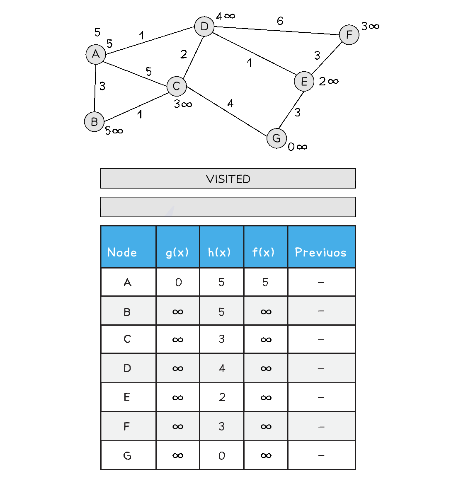
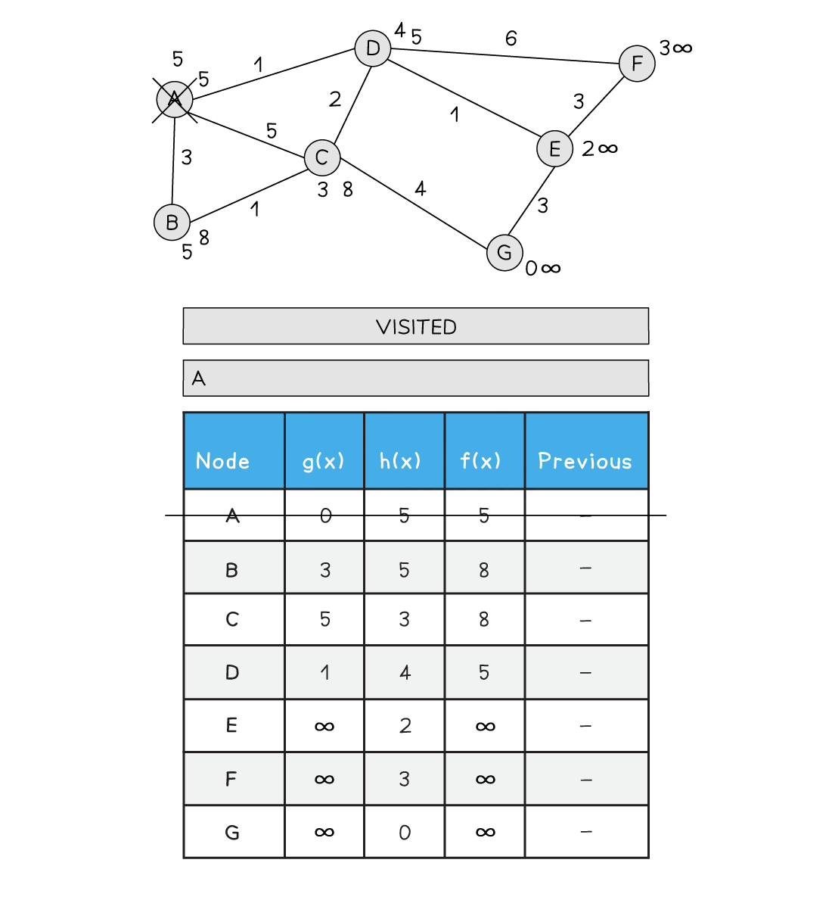
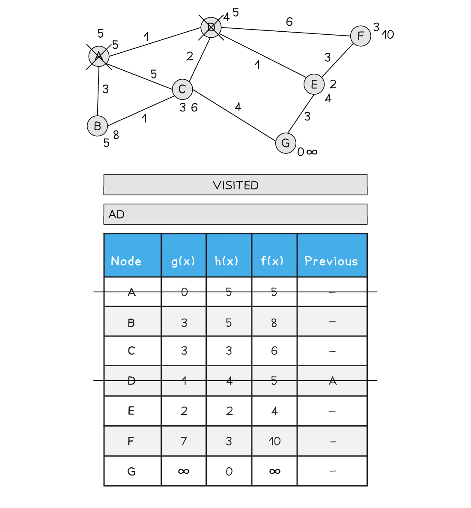
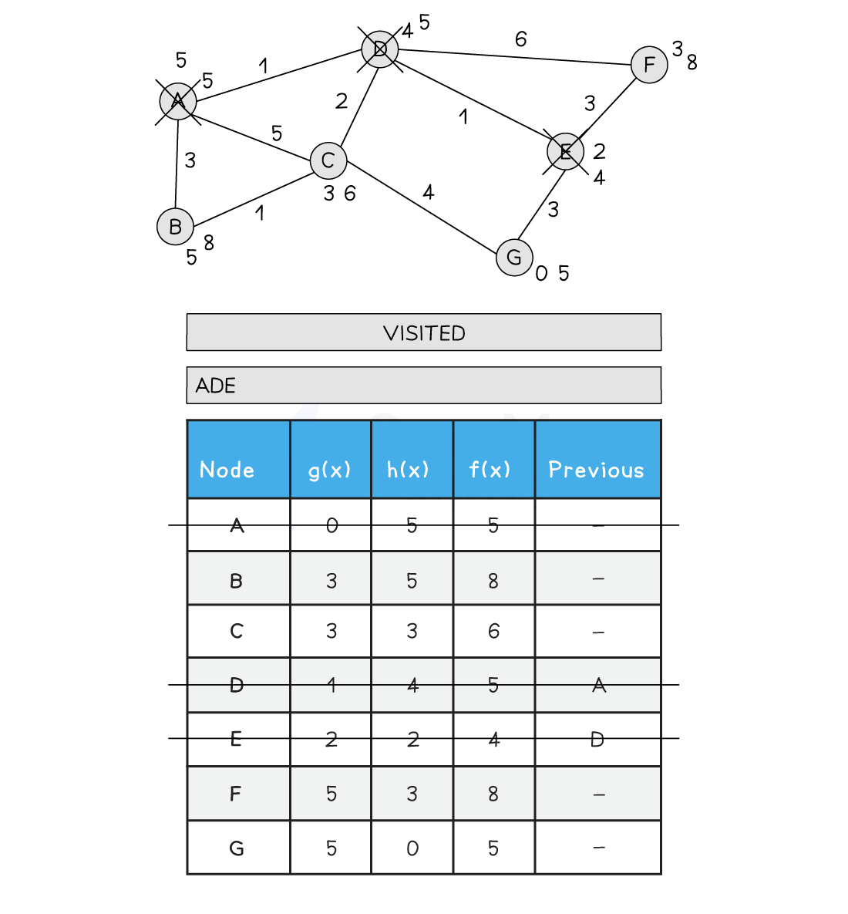
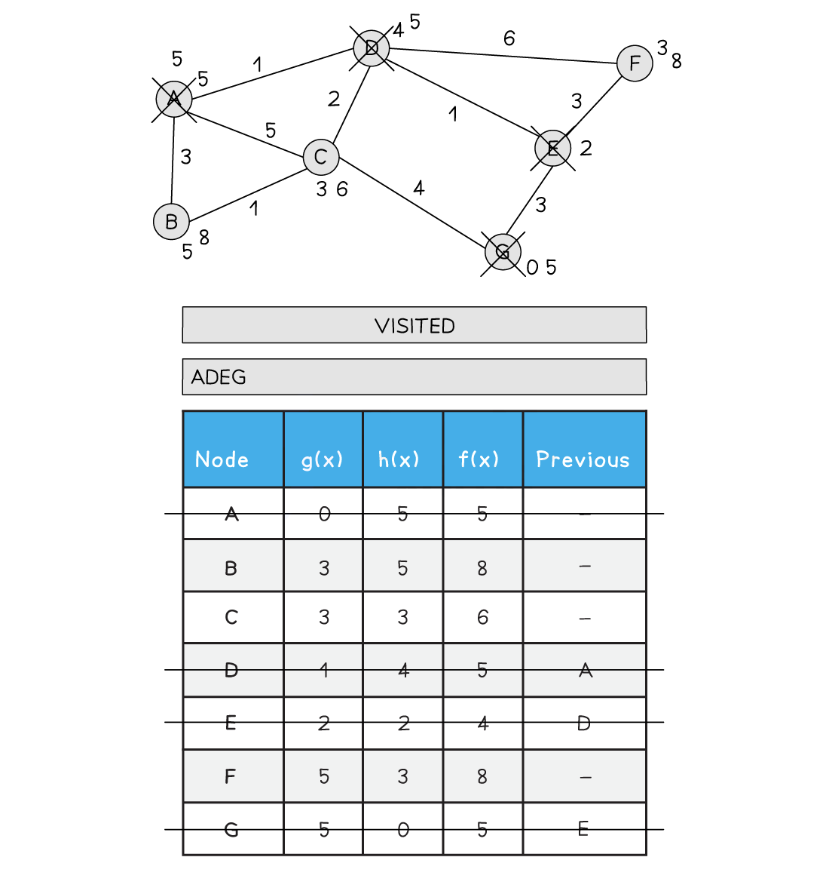
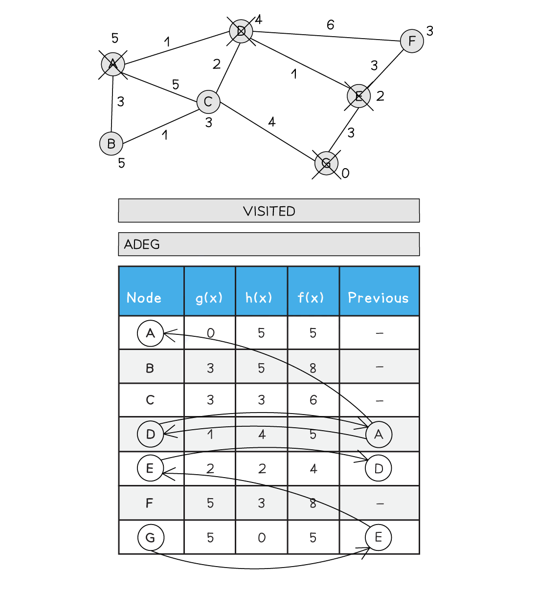
Figure 2: Performing the A* Search
A\* vs Dijkstra's
| Feature | Dijkstra’s | A* Search |
|---|---|---|
| Goal-aware? | No | Yes |
| Cost function | g(x) |
g(x) + h(x) |
| Speed | Slower (explores more) | Faster (more direct toward goal) |
| Use of heuristic | None | Yes, estimates distance to goal |
| Best for… | Full shortest path map | Fastest route to a specific destination |
A* and Dijkstra compared ★
- Dijkstra’s algorithm is A* with
h(x) = 0: it expands nodes in order of the actual costg(x)only, so it spreads out in every direction and finds the shortest path to all nodes - A* expands nodes in order of
f(x) = g(x) + h(x), so it prefers nodes that are cheap so far and look close to the goal - A* is faster, but only stays optimal if the heuristic never overestimates the true remaining cost; Dijkstra’s needs no heuristic and always finds the shortest path
- Dijkstra’s suits finding the shortest path to every node; A* suits a single start–goal pair in a large graph
- One mark-scheme point that is often overlooked: Dijkstra’s algorithm cannot work with negative weights, whereas A* can work with negative values/weights (2025 Summer P33 Q10(b) MP4)
Programming A* algorithm (enrichment only — not examinable)
The 2027–2029 syllabus explicitly excludes writing algorithms to set up, access, or search graphs. Study the manual execution of A* (g / h / f table) instead of this implementation.
Pseudocode
FUNCTION AStarSearch(graph, start, goal)
// Initialise distances and f-scores
FOR EACH node FROM graph
SET g[node] TO infinity
SET f[node] TO infinity
NEXT node
SET g[start] TO 0
SET f[start] TO h[start]
DECLARE openSet AS LIST
ADD start TO openSet
WHILE openSet IS NOT EMPTY
// Find node in openSet with the lowest f value
SET min TO null
FOR EACH node FROM openSet
IF min = null THEN
SET min TO node
ELSEIF f[node] < f[min] THEN
SET min TO node
ENDIF
NEXT node
IF min = goal THEN
EXIT WHILE
ENDIF
REMOVE min FROM openSet
// Check all neighbours of current node
FOR EACH neighbour FROM graph[min]
SET tentativeG TO g[min] + cost(min, neighbour)
IF tentativeG < g[neighbour] THEN
SET g[neighbour] TO tentativeG
SET f[neighbour] TO g[neighbour] + h[neighbour]
SET previousNode[neighbour] TO min
IF neighbour NOT IN openSet THEN
ADD neighbour TO openSet
ENDIF
ENDIF
NEXT neighbour
ENDWHILE
RETURN previousNode
ENDFUNCTION
graph[min]assumes you’re storing adjacency listsh[node]is your heuristic tableg[]andf[]are maps (dictionaries) for real cost and estimated total costcost(min, neighbour)should be defined or assumed available
Python
def a_star_search(graph, start, goal, h):
open_set = [start]
g = {node: float('inf') for node in graph}
f = {node: float('inf') for node in graph}
came_from = {}
g[start] = 0
f[start] = h[start]
while open_set:
# Get node with lowest f value
current = min(open_set, key=lambda node: f[node])
if current == goal:
break
open_set.remove(current)
for neighbour, cost in graph[current]:
tentative_g = g[current] + cost
if tentative_g < g[neighbour]:
g[neighbour] = tentative_g
f[neighbour] = g[neighbour] + h[neighbour]
came_from[neighbour] = current
if neighbour not in open_set:
open_set.append(neighbour)
# Reconstruct path
path = []
node = goal
while node != start:
path.append(node)
node = came_from[node]
path.append(start)
path.reverse()
return path
Example usage:
graph = {
'A': [('B', 2), ('C', 5)],
'B': [('D', 4)],
'C': [('D', 1)],
'D': [('E', 3)],
'E': []
}
h = {
'A': 7,
'B': 6,
'C': 4,
'D': 2,
'E': 0
}
print(a_star_search(graph, 'A', 'E', h))
Output:
- A possible shortest path from
'A'to'E', guided by the heuristic values
The A* algorithm is used to perform searches on a graph.
Calculate the best path between the W and E nodes on the following diagram using the A* algorithm.
Show your working in the table provided. The first two rows have been done for you.
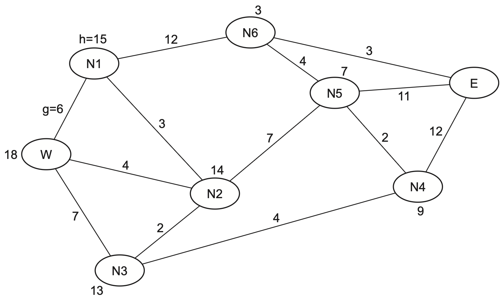
| current path | destination node | cost of current path (g) | heuristic (h) | total (f = g + h) |
|---|---|---|---|---|
| W | W | 0 | 18 | 18 |
| W | N1 | 6 | 15 | 21 |
final path … [5]
Answer
Q9(b) One mark for each correct calculation as follows (Max 4):
- MP1 W to N2 and W to N3 (Lines 3 and 4 in table);
- MP2 W→N2 to N5 (Line 5 in table);
- MP3 W→N2→N5 to N4 (Line 6 in table);
- MP4 W→N2→N5 to N6 (Line 7 in table);
- MP5 W→N2→N5 to E (Line 8 in table);
- MP6 W→N2→N5→N6 to E (Line 9 in table).
One mark for correct path (Max 1): MP7 W→N2→N5→N6→E.
Examiner’s note (not part of the mark scheme): Guidance: Lines 3 and 4 can be in either order; lines 6, 7 and 8 can be in any order; everything else must be in the table order. See completed table below.
| Line | Current path | Destination node | Cost of current path (g) | Heuristic (h) | Total (f = g + h) |
|---|---|---|---|---|---|
| 1 | W | W | 0 | 18 | 18 |
| 2 | W | N1 | 6 | 15 | 21 |
| 3 | W | N2 | 4 | 14 | 18 |
| 4 | W | N3 | 7 | 13 | 20 |
| 5 | W→N2 | N5 | 4+7=11 | 7 | 18 |
| 6 | W→N2→N5 | N4 | 4+7+2=13 | 9 | 22 |
| 7 | W→N2→N5 | N6 | 4+7+4=15 | 3 | 18 |
| 8 | W→N2→N5 | E | 4+7+11=22 | 0 | 22 |
| 9 | W→N2→N5→N6 | E | 4+7+4+3=18 | 0 | 18 |
| Final path | W→N2→N5→N6→E |
Calculate the path that takes the shortest time to travel from the Begin node to the End node, using the A* algorithm.
Show your working in the table provided. The first two rows have already been completed.

| Start node | Destination node | Cost from start node (g) | Heuristic (h) | Total (f = g + h) |
|---|---|---|---|---|
| Begin | Begin | 0 | 12 | 12 |
| Begin | A | 5 | 8 | 13 |
Final path … [5]
Answer
Q10(b) One mark for each correct calculation as follows (Max 2):
- Node B (from Begin) (Line 3 in table)
- Node C (from Begin) (Line 4 in table)
- Node D (from Begin) (Line 5 in table)
One mark for each correct calculation as follows (Max 2):
- Node G (from C) (Line 6 in table)
- Node F and Node End (from G) (Lines 7 and 8 in table)
- Node End (from F) (Line 9 in table)
One mark for correct path (Max 1):
- Begin ⇒ C ⇒ G ⇒ F ⇒ End
| Start node | Destination node | Cost from start node (g) | Heuristic (h) | Total (f = g + h) |
|---|---|---|---|---|
| Begin | Begin | 0 | 12 | 12 |
| Begin | A | 5 | 8 | 13 |
| Begin | B | 6 | 7 | 13 |
| Begin | C | 5 | 7 | 12 |
| Begin | D | 4 | 11 | 15 |
| C | G | 5 + 2 = 7 | 5 | 12 |
| G | F | 5 + 2 + 4 = 11 | 1 | 12 |
| G | End | 5 + 2 + 7 = 14 | 0 | 14 |
| F | End | 5 + 2 + 4 + 1 = 12 | 0 | 12 |
Final Path: Begin ⇒ C ⇒ G ⇒ F ⇒ End
Outline how the A* algorithm is different from Dijkstra’s algorithm.
… [3]
Answer
Q9(b)(i) One mark per mark point (Max 3):
- MP1 The A* algorithm tries to find the shortest path using heuristics / intelligent guesses;
- MP2 The A* algorithm doesn’t necessarily pass through all nodes/paths;
- MP3 Dijkstra’s algorithm finds the shortest path to all nodes // Dijkstra’s algorithm simply checks each vertex looking for the shortest path;
- MP4 Dijkstra’s algorithm always finds the shortest path;
- MP5 The A* algorithm may not find the shortest path if the heuristics are inaccurate.
Examiner’s note (not part of the mark scheme): Guidance: Do not award MP3 for searching through all routes/paths – it is looking at the shortest path to all nodes.
Machine learning, neural networks and deep learning
What is machine learning (ML)?
- Machine learning is a type of artificial intelligence (AI) that allows computers to:
- Learn patterns from data
- Improve performance without being explicitly programmed
- Instead of following fixed rules, machine learning systems:
- Analyse large amounts of data
- Identify patterns or trends
- Make predictions or decisions based on that data
- ML is used in: spam filters, voice assistants, recommendation systems, fraud detection
What are artificial neural networks (ANNs)?
- Artificial neural networks (ANNs) are algorithms inspired by the structure of the human brain
- A neural network is made up of layers of nodes (neurons) connected by weighted links
- Each neuron receives input, processes it, and passes the result to the next layer
- The network adjusts the weights based on errors in output (using algorithms like back propagation)
- ANNs have played a significant role in the development of machine learning: they are a key component of ML, can solve problems that are difficult or impossible for humans to specify with rules, and improve their results as more data becomes available
How ANNs help machine learning
- ANNs are powerful because they:
- Automatically learn from experience, even with complex or unstructured data
- Improve their accuracy with more data and training
- Can solve problems that are too complex for rule-based programming
- Examples: handwriting recognition, speech recognition, image classification, language translation
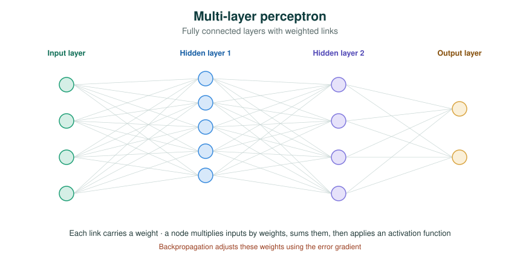
Inside an artificial neural network ★
- A network is arranged in layers: an input layer with one node per feature, one or more hidden layers, and an output layer
- Each connection carries a weight; a node multiplies every incoming value by its weight, adds the results and passes the total through an activation function
- The weights are what is learned: they start at random values and are adjusted until the output matches the training data
- Hidden layers let the network combine simple features into complex ones, which is what allows it to model non-linear relationships that a single rule cannot
- Data are input at the input layer and analysed at each subsequent hidden layer, where characteristics are extracted; the output layer provides the result
- Multiple hidden layers enable deep learning: more layers allow more complex problems to be solved and improve the accuracy of the result
- Back propagation of errors is used to correct any errors in the output during training
Deep learning (DL)
- Deep learning is a subfield of machine learning that uses deep (multi-layered) neural networks
- The more layers a network has, the more complex patterns it can learn
- Especially effective at learning abstract features in images, text, audio, and video
- Example: facial recognition apps learn features like eyes, noses, and then full faces through many layers
What makes deep learning “deep” ★
- Deep learning uses a neural network with many hidden layers, so features are built up level by level: early layers detect simple patterns such as edges, later layers combine them into whole objects
- Depth is what separates deep learning from a shallow network: the more layers, the more abstract the features that can be represented, and the higher the level of success
- Deep networks are trained by back propagation with gradient descent, which is why they need large datasets and heavy computation
- Deep learning is chosen when the raw input is unstructured (images, sound, text) and the relevant features cannot be hand-coded; it outperforms other methods when the data size is large and is effective at finding hidden patterns that humans cannot see
Reinforcement learning (RL)
- Reinforcement learning is another type of machine learning where an agent learns by interacting with an environment
- It receives rewards for good actions and penalties for poor actions
- Over time, the agent learns an optimal strategy (called a policy) to maximise rewards
- Used in: robotics, self-driving cars, game-playing AI (like AlphaGo), industrial automation
How reinforcement learning works ★
- The agent is the learner and decision maker; the environment is everything it interacts with
- At each step the agent observes a state, chooses an action, and receives a reward together with the next state
- The policy is the mapping from states to actions, and learning means improving that mapping over time
- Learning is trial and error: actions that lead to higher reward become more likely, actions that lead to penalties become less likely
- The agent learns automatically from feedback without labelled data or specific instructions; node weightings are adjusted to achieve the correct outcome
Summary: why use these methods?
| Method | What it does | Why use it |
|---|---|---|
| Machine Learning | Learns from data | Automates decisions with high accuracy |
| Artificial Neural Network | Mimics human brain to recognise complex patterns | Excellent for handling messy, high-dimensional data |
| Deep Learning | Uses many neural layers to extract features | Performs well with images, language, sound |
| Reinforcement Learning | Learns by trial and error with feedback | Useful where there’s no labelled data, only success/failure |
Artificial neural networks have played a significant role in the development of machine learning.
Explain what is meant by the term artificial neural network.
… [4]
Answer
12 One mark per mark point (Max 4)
- MP1: An artificial neural network is the component of artificial intelligence that is meant to simulate the functioning of a biological brain.
- MP2: Artificial neural networks are a key component of machine learning.
- MP3: They can solve problems that would prove impossible or difficult for humans // Artificial neural networks have self-learning capabilities that enable them to produce better results as more data becomes available
- MP4: Artificial neural networks can be layered (input, hidden and output layers) // Artificial neural networks have many interconnected layers, some / many of which are hidden
- MP5: Weights are assigned between nodes
- MP6: Weights are adjusted through training to give a more accurate result
- MP7: More complex learning capabilities / more accurate results are available with larger numbers of hidden layers
Explain the use of artificial neural networks in Deep Learning.
… [4]
Answer
10b One mark for each mark point (Max 4)
- MP1: Artificial neural networks are designed to work in the same way as the human brain
- MP2: ANNs provide the architecture and algorithms for learning from the data
- MP3: They have a large number of connected processing units / nodes
- MP4: … that are arranged in layers / interconnected and work together to process data
- MP5: Deep learning models learn from data by adjusting the weights/biases of the connections between neurons
- MP6: They use multiple hidden layers to extract complex features and to make predictions
Describe Deep Learning.
… [5]
Answer
(b) One mark for each mark point (Max 5)
- Deep learning is a branch of machine learning
- It makes use of artificial neural networks
- … to work in a similar manner to the human/biological brain // … neural networks can be trained to process data
- It is a structure consisting of many interconnected layers
- … input, hidden and output // the input layer feeds the first hidden layer, the last hidden layer feeds the output
- … gradually breaking down and analysing the data to find (hidden) patterns
- Deep leaning’s feature extraction/learning involves how to detect features/categories from data
- … and can involve different types of supervision
- It works well with large data sets
- Deep learning uses back propagation of errors to adjust parameters/weightings to refine its results / improve its accuracy.
Explain what is meant by Reinforcement Learning in relation to Artificial Intelligence.
… [3]
Answer
11 One mark per mark point (Max 3)
- Reinforcement learning is a machine learning technique based on feedback / rewards / punishment.
- … in which an agent learns to behave in an environment by performing the actions and seeing the results of the actions.
- … for each good action, the agent gets positive feedback / reward and each bad action receives negative feedback / punishment.
- The agent learns automatically using feedback without any labelled data / specific instructions.
- Adjust node weightings to achieve the correct outcome. // Using feedback to improve its performance at accomplishing similar tasks.
Deep learning is used in Artificial Intelligence (AI).
(a) Describe what is meant by deep learning. [2]
(b) Outline the reasons for using deep learning. [2]
Answer
9(a) One mark for each correct point (Max 2)
- Uses artificial neural network(s)
- … that contain(s) a high number of hidden layers
- … modelled on the human brain.
- Deep learning uses many layers to progressively extract higher level features from the (raw) input.
- Deep learning is a specialised form of machine learning.
9(b) One mark for each correct point (Max 2)
- Deep learning makes good use of unstructured data.
- Deep learning outperforms other methods if the data size is large.
- Deep learning systems enable machines to process data with a nonlinear approach.
- Deep learning is effective at identifying (hidden) patterns / patterns that humans might not be able to see / patterns that are too complex / time consuming for humans to carry out.
- It can provide a more accurate outcome with higher numbers of hidden layers.
Categories of machine learning
- Machine learning algorithms are categorised based on how they learn from data
- Categories that appear in the mark schemes are: supervised learning, unsupervised learning, reinforcement learning and deep learning (any one of these is accepted as “a category of machine learning”)
- Reinforcement learning and deep learning are covered in the previous section; supervised and unsupervised learning are described below
Supervised learning
- Supervised learning is when the algorithm is trained on a labelled dataset
- Meaning the input data has known outputs (answers)
- The goal is to learn a function that maps inputs to the correct output
- Once trained, the model can make predictions on unseen data
- Example:
- Input: Email text
- Output: Spam or Not Spam
- The model learns from thousands of pre-labelled emails
Used for:
- Classification (e.g. face recognition, spam detection)
- Regression (e.g. predicting house prices)
Unsupervised learning
- Unsupervised learning is when the algorithm is given unlabelled data, and it must find patterns or groupings on its own
- There are no correct answers, the system explores the data structure
- It identifies clusters, trends, or anomalies without any guidance
- Example:
- Input: Customer purchase data
- Output: Groups of customers with similar buying habits
Used for:
- Clustering (e.g. customer segmentation, social network analysis)
- Dimensionality reduction (e.g. simplifying complex data)
The three learning paradigms ★
- Supervised learning trains on a labelled dataset of input–output pairs, so the correct answer is known during training; typical uses are classification and regression
- Unsupervised learning trains on unlabelled data and must find structure by itself; typical uses are clustering and dimensionality reduction
- Reinforcement learning does not train on a dataset at all: an agent acts in an environment, receives rewards or penalties, and adjusts its policy to maximise total reward
- The three differ in what feedback is available: labelled answers, no answers at all, or a delayed reward signal
- A common exam question asks you to match each category to its description; note that “enables information related to errors produced by the neural network to be transmitted” describes back propagation and is not used in that matching exercise
Explain how supervised learning and unsupervised learning are trained.
[4]
Answer
9(a) One mark per mark point (Max 4):
- MP1 Supervised learning makes use of labelled training data;
- MP2 … to predict future events based on past outcomes;
- MP3 Unsupervised learning makes use of unlabelled training data / training data without instructions on what to do with it / does not use training data with the correct/expected outcomes;
- MP4 … to search for hidden patterns/relationships/structures/similarities/outliers within the data;
- MP5 … to therefore get closer to the desired outcome as the training progresses.
Supervised and unsupervised learning are two categories of machine learning.
Describe supervised learning and unsupervised learning.
Supervised learning
…
Unsupervised learning
… [4]
Answer
7 One mark for each point
Supervised learning (Max 3 of 4)
- Supervised learning allows data to be collected, or a data output produced, from the previous experience.
- In supervised learning, known input and associated outputs are given // uses sample data with known outputs (in training) // uses labelled input data.
- Able to predict future outcomes based on past data.
Unsupervised learning (Max 3 of 4)
- Unsupervised machine learning helps all kinds of unknown patterns in data to be found.
- Unsupervised learning only requires input data to be given.
- Uses any data // not trained on the right output // uses unlabelled input data.
Explain how unsupervised learning takes place in machine learning.
[3]
Answer
10© One mark for each mark point (Max 3)
- MP1 Unsupervised learning uses algorithms to analyse / cluster
- MP2 … unlabelled data sets
- MP3 They discover hidden patterns / data groupings / clusters without the need for human intervention.
- MP4 It is able to discover similarities and differences in data / information.
Back propagation and regression
What is back propagation?
- Back propagation is a training method used in artificial neural networks to improve accuracy by adjusting the weights of connections
- It is a key part of the supervised learning process and works as follows:
- Forward pass:
- Input data passes through the network layer by layer
- The network produces an output (a prediction)
- Error calculation
- The output is compared to the actual target value
- The difference is called the error
- Backward pass
- The error is propagated backwards through the network
- Each layer calculates its contribution to the error
- Weight adjustment
- The weights of the connections are updated using an algorithm (e.g. gradient descent) to reduce future errors
Why use back propagation?
- Helps the neural network learn from mistakes
- Makes the model more accurate over time
- Allows multi-layer networks to fine-tune all layers, not just the output
- Common in: image recognition, speech recognition, language translation
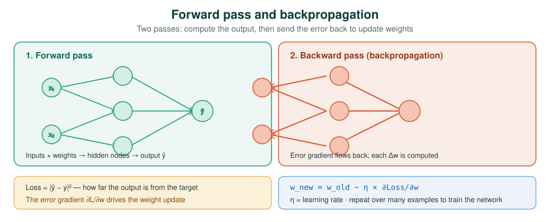
How back propagation adjusts the weights ★
- The error is passed back one layer at a time, so the weights in the hidden layers are adjusted too, not just the weights feeding the output layer
- Initial outputs are compared to expected outputs, and calculus is used to find the error gradient in the obtained outputs
- The results are fed back into the neural network and the weightings of each neuron/node are adjusted as a result of the feedback; the process repeats until the results are more accurate
- The size of each weight change is controlled by a learning rate: too large and training overshoots, too small and training is very slow
- Because it compares the output with a known target value, back propagation is a supervised training method and needs labelled data
What is regression?
- Regression is a type of supervised learning used to predict continuous values (rather than categories)
- The aim is to find the relationship between input features and a numerical output
Types of regression:
| Type | Description |
|---|---|
| Linear regression | Predicts output using a straight-line relationship (y = mx + c) |
| Multiple linear regression | Uses multiple input features to predict one continuous output |
| Logistic regression | Predicts binary outcomes (e.g. yes/no), despite the name “regression” |
Example: linear regression
- Predicting house prices based on square footage:
- Input: size of house
- Output: estimated price
- The model learns a line that best fits the data points
Why use regression methods?
- Useful for forecasting, trend analysis, and risk prediction
- Interpretable, often used in real-world problems like:
- Business analytics
- Finance
- Healthcare
How regression is fitted ★
- The line or curve is fitted by minimising the error between predicted and actual values, for example the mean squared error
- The fitted line is the line of best fit; after fitting it can predict a value for any new input
- Regression predicts a continuous value, whereas classification predicts a discrete label — both are supervised tasks
- In mark schemes regression is described as a supervised technique that finds a mathematical function / plots a best-fit line or curve / uses calculus to find the error gradient, mapping how independent variables/cause influence a dependent variable/effect, with the goal of minimising the difference between predicted and actual values
Describe the back propagation of errors method in Machine Learning.
… [4]
Answer
9(b) One mark per mark point (Max 4)
- Initial outputs are compared to expected outputs
- … weightings are adjusted to minimise the difference between actual and expected outputs
- Calculus is used to find the error gradient in the obtained outputs
- … the results are fed back into the neural network
- … weightings of each neuron / node are adjusted as a result of the feedback
- … the process repeats until results are more accurate
Explain what is meant by regression methods in relation to machine learning.
… [3]
Answer
9(a) One mark per mark point (Max 3)
- MP1 A supervised learning technique of machine learning
- MP2 It finds a mathematical function // It plots a best-fit line/curve // calculus is used to find the error gradient
- MP3 … that maps how independent variables/cause influence a dependent variable/effect between the data
- MP4 It is used for forecasting trends and predicting outcomes
- MP5 It will be trained to understand the relationship between different causes and effects allow to find relationships between two sets of data
- MP6 The goal is to minimise the difference between the predicted values and the actual values.
Exam Question Index
| Sub-question | Exam point | Source |
|---|---|---|
| P31 Q10(a) | Graphs used to aid AI | 2025 Summer P31 Q10(a) |
| P32 Q6(a) | Purpose and structure of a graph | 2025 Summer P32 Q6(a) |
| P31 Q9(b) | A* and Dijkstra’s graph searches | 2026 Summer P31 Q9(b) |
| P32 Q9(b)(i) | A* and Dijkstra’s graph searches | 2026 Summer P32 Q9(b)(i) |
| P32 Q9(b)(ii) | A* and Dijkstra’s graph searches | 2026 Summer P32 Q9(b)(ii) |
| P33 Q9(b) | A* and Dijkstra’s graph searches | 2026 Summer P33 Q9(b) |
| P31 Q7(a) | A* and Dijkstra’s graph searches | 2025 Winter P31 Q7(a) |
| P33 Q10(a) | A* and Dijkstra’s graph searches | 2025 Summer P33 Q10(a) |
| P33 Q10(b) | A* and Dijkstra’s graph searches | 2025 Summer P33 Q10(b) |
| P31 Q2(b) | A* and Dijkstra’s graph searches | 2023 Summer P31 Q2(b) |
| P32 Q10(b) | A* and Dijkstra’s graph searches | 2023 Summer P32 Q10(b) |
| P31 Q9(b) | A* and Dijkstra’s graph searches | 2021 Winter P31 Q9(b) |
| P31 Q10(b) | Neural networks & machine learning | 2025 Summer P31 Q10(b) |
| P31 Q12 | Neural networks & machine learning | 2023 Winter P31 Q12 |
| P31 Q9(a)(i) | Neural networks & machine learning | 2021 Winter P31 Q9(a)(i) |
| P31 Q9(a)(ii) | Neural networks & machine learning | 2021 Winter P31 Q9(a)(ii) |
| P32 Q9(a) | Deep / Machine / Reinforcement Learning | 2026 Summer P32 Q9(a) |
| P31 Q7(b) | Deep / Machine / Reinforcement Learning | 2025 Winter P31 Q7(b) |
| P32 Q9(a)(i) | Deep / Machine / Reinforcement Learning | 2025 Winter P32 Q9(a)(i) |
| P32 Q9(a)(ii) | Deep / Machine / Reinforcement Learning | 2025 Winter P32 Q9(a)(ii) |
| P31 Q9 | Deep / Machine / Reinforcement Learning | 2024 Summer P31 Q9 |
| P32 Q11 | Deep / Machine / Reinforcement Learning | 2024 Summer P32 Q11 |
| P31 Q9(a) | Deep / Machine / Reinforcement Learning | 2022 Winter P31 Q9(a) |
| P31 Q9(b) | Deep / Machine / Reinforcement Learning | 2022 Winter P31 Q9(b) |
| P31 Q9(a) | Supervised vs unsupervised learning | 2026 Summer P31 Q9(a) |
| P32 Q6(b) | Supervised vs unsupervised learning | 2025 Summer P32 Q6(b) |
| P33 Q10© | Supervised vs unsupervised learning | 2025 Summer P33 Q10© |
| P31 Q2(a) | Supervised vs unsupervised learning | 2023 Summer P31 Q2(a) |
| P32 Q10(a) | Supervised vs unsupervised learning | 2023 Summer P32 Q10(a) |
| P32 Q7 | Supervised vs unsupervised learning | 2022 Winter P32 Q7 |
| P33 Q9(a) | Back propagation & regression | 2026 Summer P33 Q9(a) |
| P32 Q9(b) | Back propagation & regression | 2025 Winter P32 Q9(b) |